Как связать Microsoft Power BI и Google BigQuery
Если вы храните данные в Google BigQuery, то наверняка захотите визуализировать их. В этой статье я расскажу, как загрузить данные из Google BigQuery в Microsoft Power BI с помощью скрипта на языке R.
Интеграция Google BigQuery c BI-платформами и электронными таблицами
Ранее я уже рассказывал, как связывать Google BigQuery с различными инструментами визуализации, но интеграция Google BigQuery с Microsoft Power BI — отдельная тема.
Оба сервиса динамично развиваются, их возможности регулярно улучшаются, благодаря чему BigQuery и Power BI так популярны. При этом Google и Microsoft во многом конкурируют, поэтому, как правило, интеграции между их продуктами нет, и в ближайшем будущем не стоит ждать появления коннектора к Google BigQuery в программном интерфейсе Microsoft Power BI.
Как начать работу с BigData — загружаем данные в Google BigQuery
На самом деле есть несколько вариантов решения этой проблемы, в данной статье мы рассмотрим два способа загрузить данные из Google BigQuery в Microsoft Power BI:
- с помощью ODBC драйвера для Google BigQuery;
- с помощью R коннектора.
Как связать Google BigQuery и Microsoft Power BI с помощью ODBC драйвера?
Первый способ стал доступен в ноябре 2016 года вместе с выходом ODBC драйвера для Google BigQuery.
-
Скачайте и установите версию ODBC драйвера, соответствующую вашей операционной системе. Найти нужную версию можно, перейдя по этой ссылке.
-
Создайте источник данных ODBC.
2.1. Перейдите в Панель управления / Все элементы панели управления / Администрирование / Источники данных ODBC (нужной разрядности).
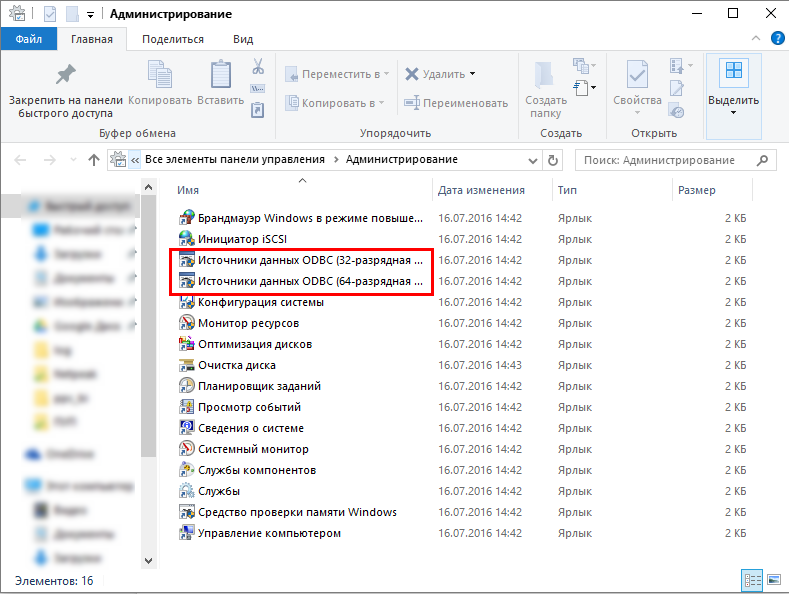
2.2. В окне «Администратор источника данных ODBC» перейдите на вкладку «Пользовательский DSN» и нажмите «Добавить».
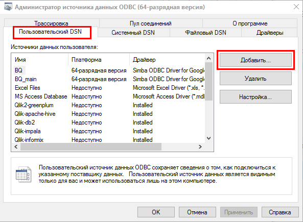
2.3. В окне «Создание нового источника данных» выбираете драйвер «Simba ODBC Driver for Google BigQuery» и нажимаете «Готово».
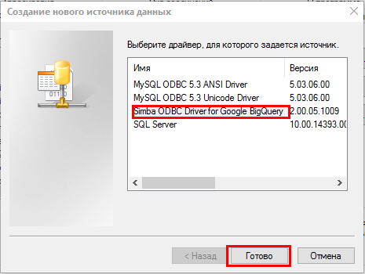
2.4. Далее откроется окно настройки ODBC подключения. Необходимо заполнить поле Data Source Name, выбрать из выпадающего списка OAuth mechanism и нажать Sign in для прохождения процесса аутентификации.
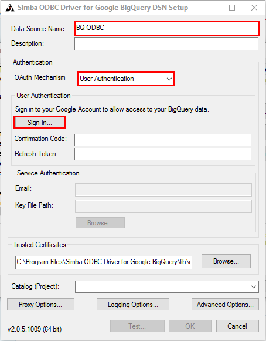
2.5. Выбираете Google аккаунт, у которого есть доступ к нужному проекту в Google BigQuery, и подтверждаете разрешение на получение автономного доступа.
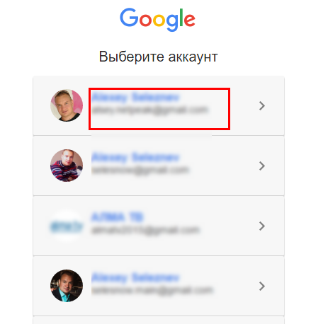
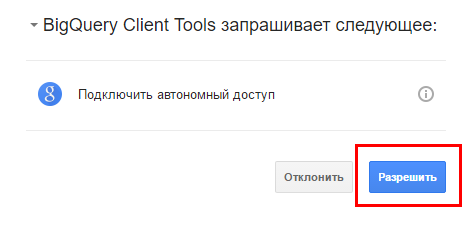
2.6. Далее вам будет предоставлен токен доступа, который необходимо скопировать и вставить в поле Confirmation code, после чего просто кликните по полю Refresh token для генерации токена обновления.
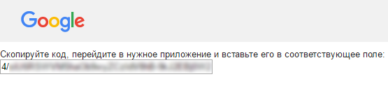
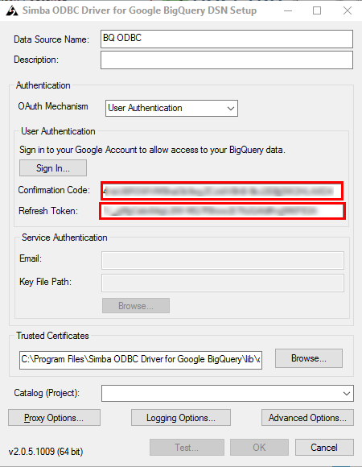
2.7. Из выпадающего списка Catalog (Project) выберите нужный проект и нажмите Test.
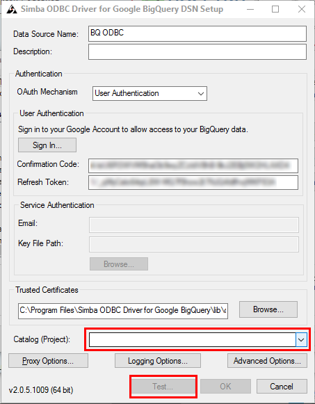
2.8. Драйвер сообщит, что тест соединения пройден успешно. После этого нажмите ОК в окне Test Result и повторно — в окне настройки драйвера.
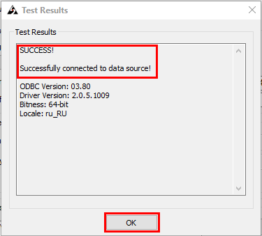
- Перейдите в Power BI и настройте подключение к созданному источнику данных.
3.1. На вкладке «Главная» основного меню Power BI нажмите «Получить данные», а в группе «Другое» выберите пункт ODBC.
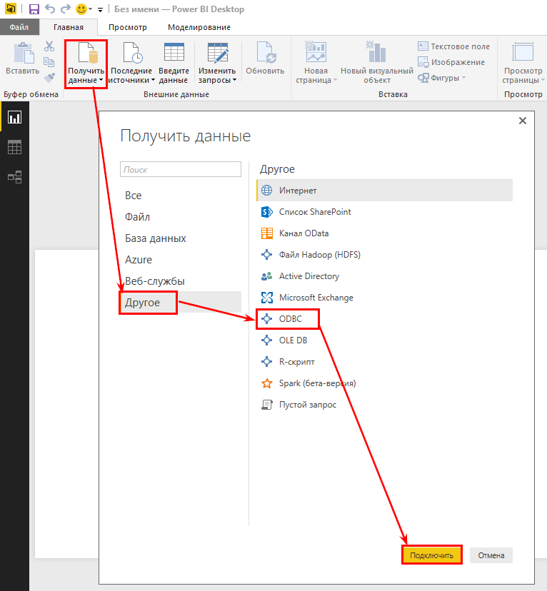
3.2. В выпадающем списке «Имя источника данных (DSN)» выберите созданный в пункте 2 источник. В данном случае я его назвал BQ ODBC.
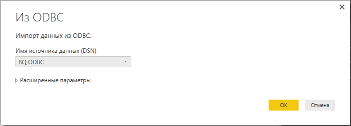
3.3. В окне «Драйвер ODBC» выберите тип подключения «По умолчанию или пользовательский» и нажмите «Подключение».
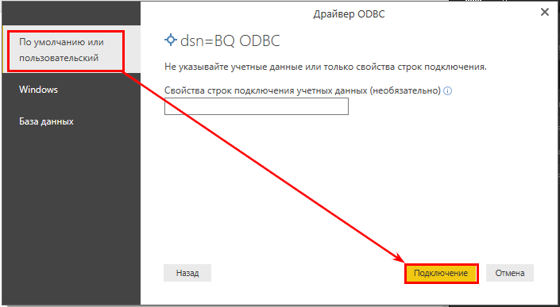
3.4. В окне «Навигатор» выбирайте нужные проекты, наборы данных и таблицы. Нажмите «Загрузить», после этого данные из Google BigQuery будут загружены в Power BI.
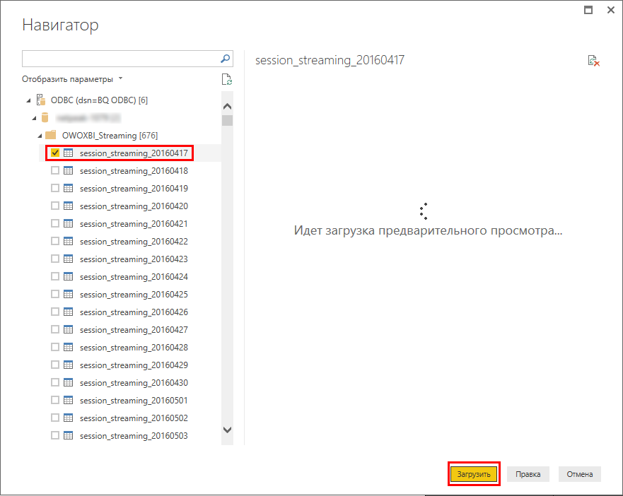
Как связать Google BigQuery и Microsoft Power BI с помощью R коннектора?
В марте 2016 года Microsoft объявил, что поддержка R-скриптов для загрузки данных в Power BI вышла из бета-тестирования. Безусловно, это одно из наиболее значимых обновлений Power BI, так как с помощью языка R можно подгружать данные практически из любого источника, включая Google BigQuery.
1. Установите пакет «bigrquery»
1.1. Первое, что необходимо сделать, — скачать и установить последнюю версию R. При установке не требуется задавать какие-то дополнительные параметры или настройки, в связи с чем затруднений возникнуть не должно.
1.2. Для более удобной работы Google BigQuery из R установите пакет «bigrquery». Для этого перейдите в папку «C:\Program Files\R\R-3.3.0\bin» и запустите файл «R.exe». Далее откроется консоль для работы с R.
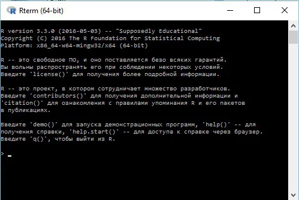
В консоли установите нужный пакет с помощью команды «install.packages(“bigrquery”)».
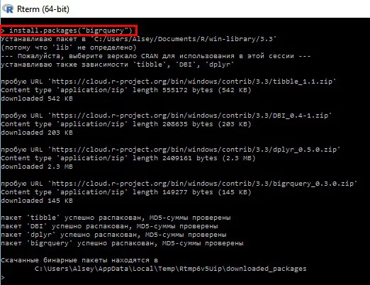
1.3. На диске C создайте папку «BQ_Integration», в ней мы будем сохранять учетные данные для доступа к API Google BigQuery.
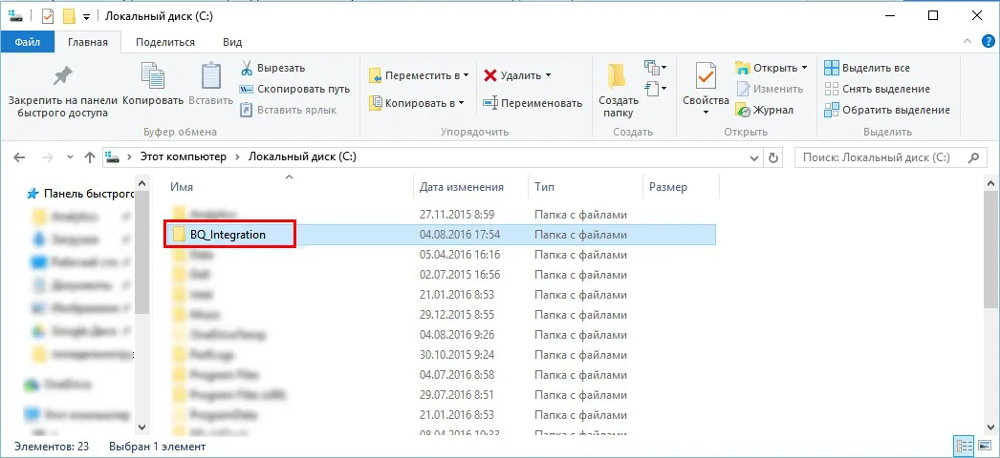
1.4. Далее в консоли R с помощью команды «setwd(“C:/BQ_Integration”)» укажите, что созданную папку будем использовать в качестве рабочей директории. Если вы все сделали правильно, можете проверить установленную рабочую директорию с помощью команды «getwd()».
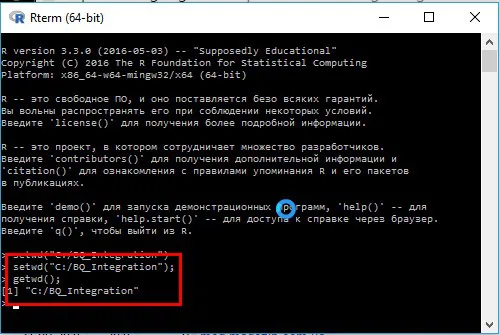
1.5. Далее подключаем пакет «bigrquery», установленный ранее с помощью «library(bigrquery)».
2. Предоставьте доступ к данным BigQuery
2.1. Для прохождения первой аутентификации запустите запрос к любой таблице BigQuery из консоли. Для этого воспользуйтесь следующим кодом:
projectID <- "XXXXXXX" #Название проекта, получить его можно из URL
dataSetID <- "XXXXXXX" #Название набора данных, смотреть в интерфейсе BigQuery
tableID
2.2. Далее в консоли на вопрос «Use a local file .httr-oauth to cache OAuth access credentials between R sessions?» ответьте «Yes». К этому моменту в консоли должен быть следующий код:
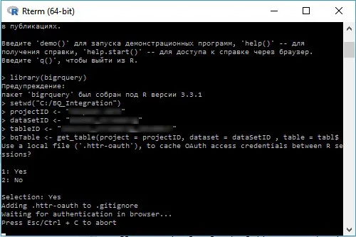
2.3. Далее выберите аккаунт Google и подтвердите разрешение на просмотр данных и управление ими в Google BigQuery, а также просмотр и изменение данных в сервисах Google облачной платформы.
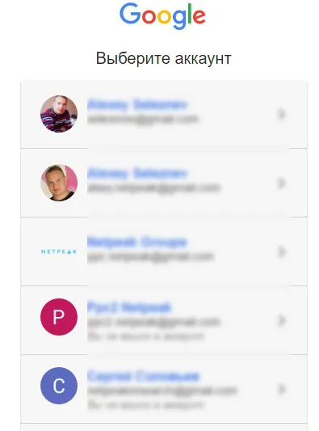
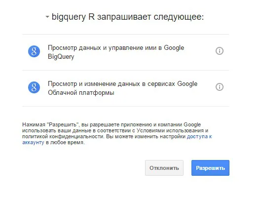
2.4. После этого вы получите подтверждение, что аутентификация прошла удачно.
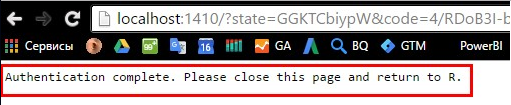
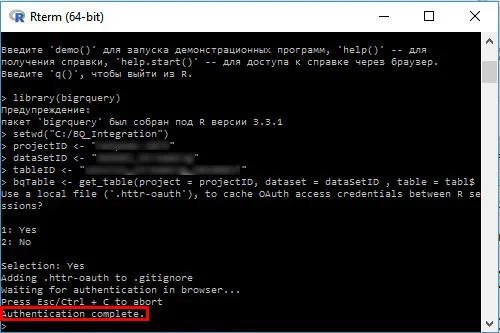
2.5. На этом этапе работа с консолью R завершена. В папке «BQ_Integration», созданной на шаге 3, должен появится файл «.httr-oauth», который содержит ваши учётные данные.
3. Интеграция с Power BI
3.1. Перейдите в интерфейс Power BI и нажмите кнопку для получения данных. В группе «Другое» выберите коннектор «R-скрипт».
Скачать бесплатно последнюю версию Power BI можно по этой ссылке.
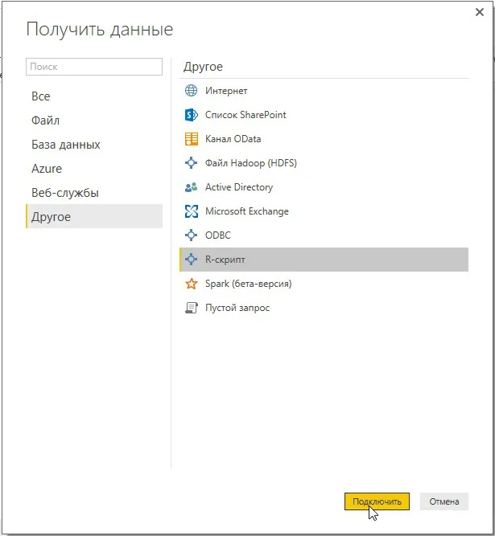
3.2. Далее появится диалоговое окно «Выполнение сценария R». Подставьте в следующий код свои значения ID проекта, набора данных и таблицы и введите его в диалоговое окно.
library(bigrquery)
setwd("C:/BQ_Integration")
projectID <- "XXXXXXX"
dataSetID <- "XXXXXXXXX"
tableID <- "XXXXXXXX"
qry
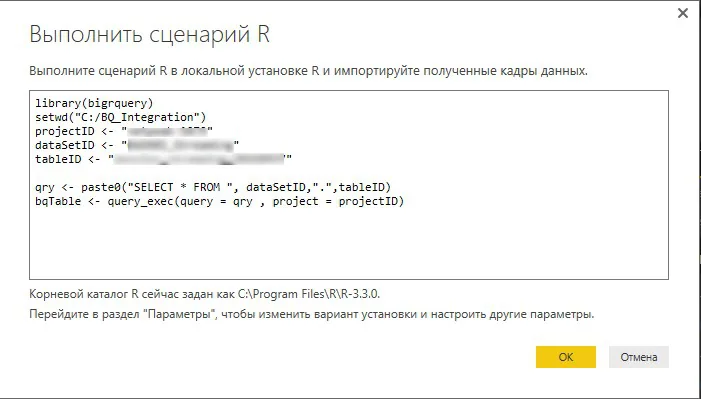
Если вы знакомы с SQL, то в кавычках вместо «qry
Как работать с оконными функциями в Google BigQuery — подробное руководство
Читайте об оконных функцияхи принципах их работы в Google BigQuery.
3.3. По нажатию кнопки «ОК» начнется процесс загрузки данных, после чего появится окно «Навигатор» с загруженной таблицей и ее полями.
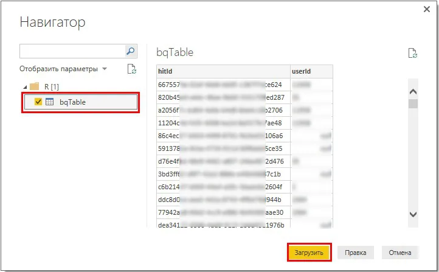
3.4. После нажатия кнопки «Загрузить», вы сможете строить визуализацию данных на основе загруженной таблицы в Microsoft Power BI.
Данные будут обновляться каждый раз при нажатии кнопки «Обновить».
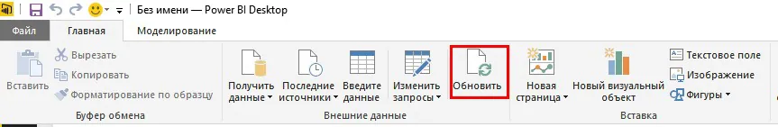
Как работать с Microsoft Power BI — подробное руководство
Подробно узнать методы построения визуализации на основе загруженных в Power BI данных можно в статье «Как работать с Microsoft Power BI — подробное руководство».
Выводы
Три шага для связки Microsoft Power BI и Google BigQuery с помощью ODBC драйвера:
- Скачайте и установите ODBC драйвер.
- Создайте источник данных ODBC.
- Перейдите в Power BI и настройте подключение к созданному источнику данных.
Три шага для связки Microsoft Power BI и Google BigQuery с помощью R коннектора:
- Установить язык R и подключить пакет «bigrquery».
- Предоставить доступ к данным BigQuery.
- Загрузить данные в Power BI и построить визуализацию.
В следующих постах поделюсь фишками загрузки данных в Power BI из других источников, к которым нет встроенных коннекторов.